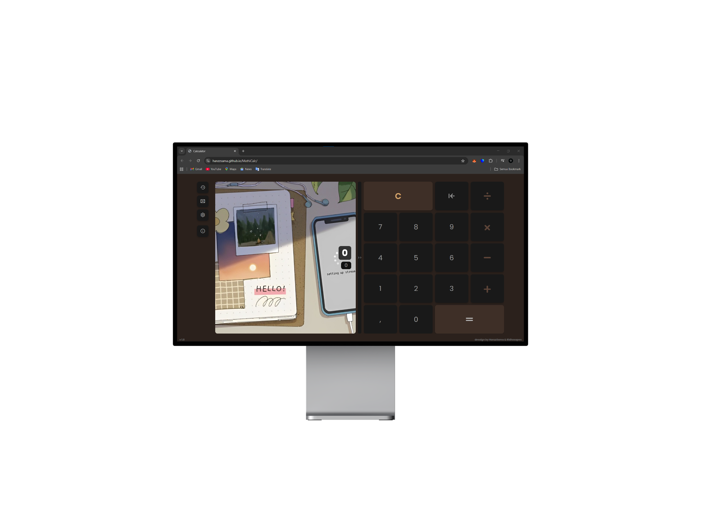
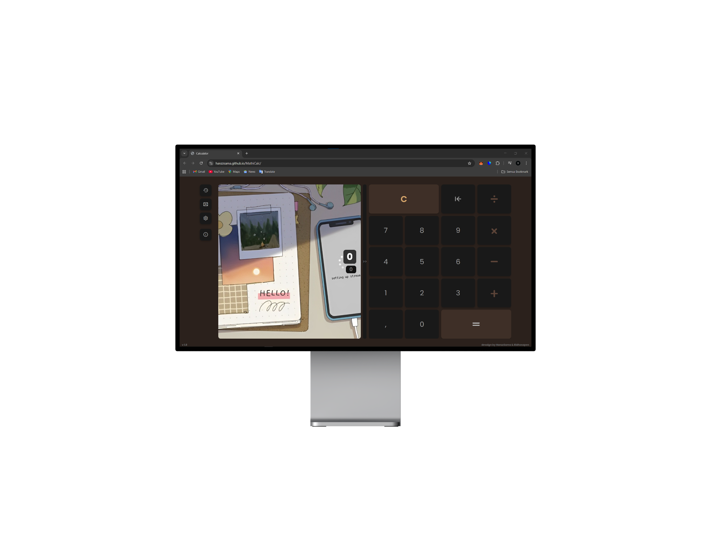
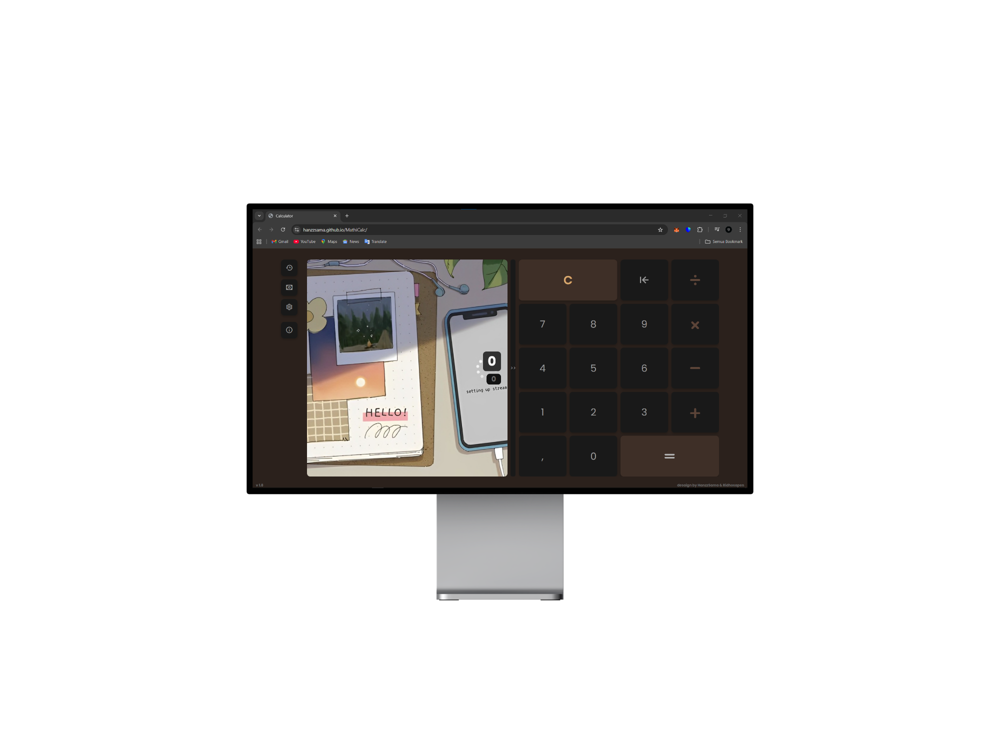
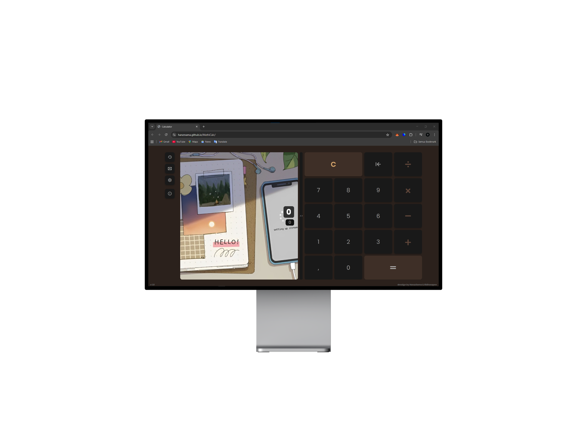
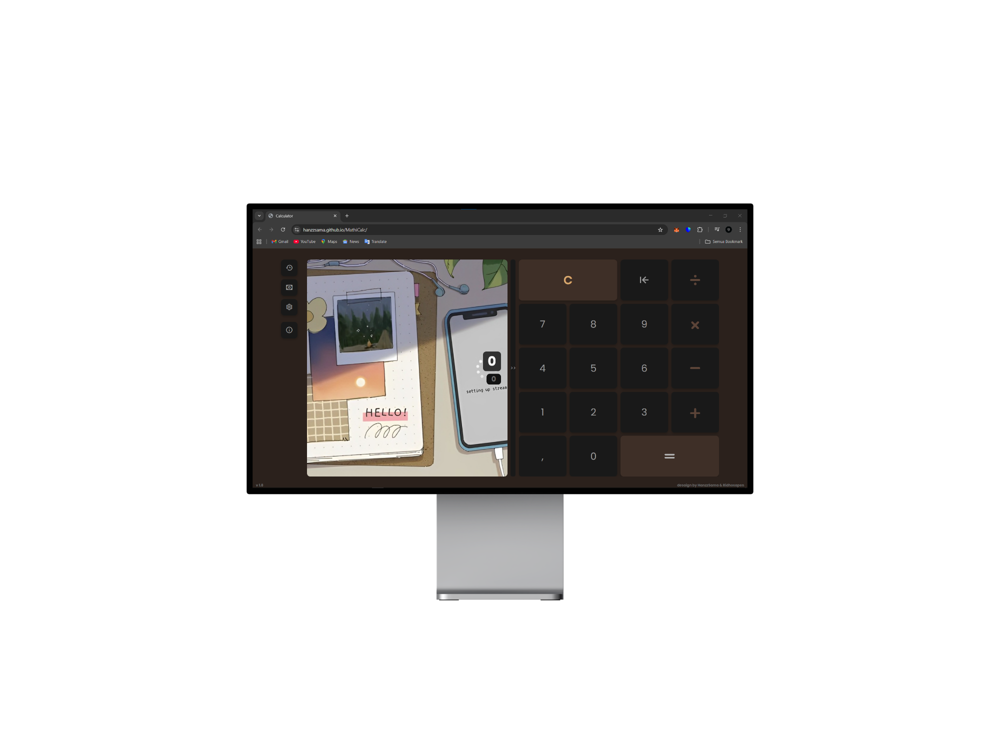
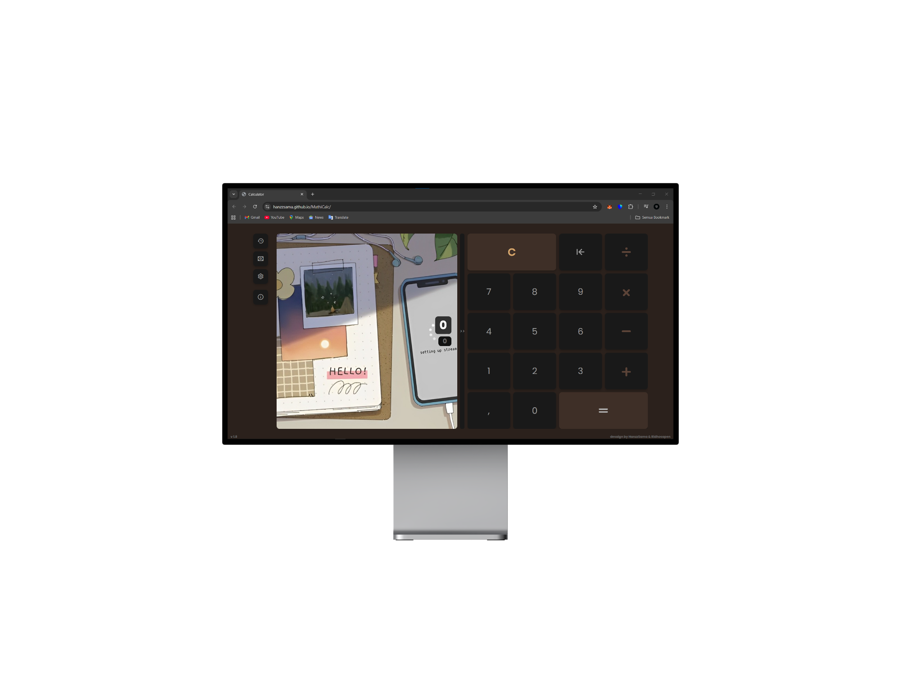

MathiCalc adalah kalkulator modern yang dirancang
untuk memberikan pengalaman menghitung yang lebih interaktif dan
personal. Selain fungsi dasar kalkulator, MathiCalc menghadirkan
beragam fitur menarik seperti
pengaturan ukuran font,
ubah tema warna,
pasang wallpaper dengan gambar favoritmu, serta
memutar video biasa atau video YouTube langsung
sebagai latar belakang.
Tak hanya itu, MathiCalc juga dilengkapi
fitur konversi mata uang untuk membantu
menghitung nilai tukar dengan cepat, dan
chatbot pintar
yang siap menemanimu dalam melakukan perhitungan atau memberi
bantuan kapan pun.
Dengan tampilannya yang fleksibel dan fitur yang lengkap,
MathiCalc bukan hanya alat hitung — tapi juga ruang kerja digital
yang menyenangkan, kreatif, dan mudah disesuaikan sesuai gaya
pengguna.
silahkan kasih saran & masukan kalian, terserah mau itu kekurangan maupun kelebihan karena masukan dari kalian berguna banget untuk perkembangan MathiCalc kami agar lebih baik.